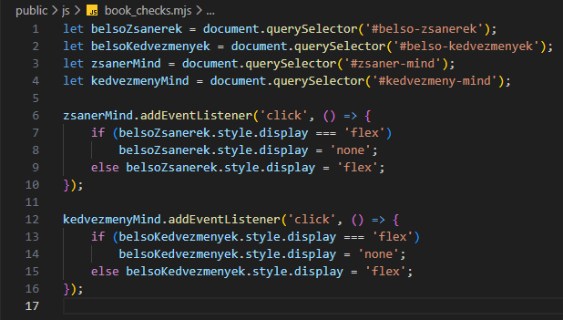
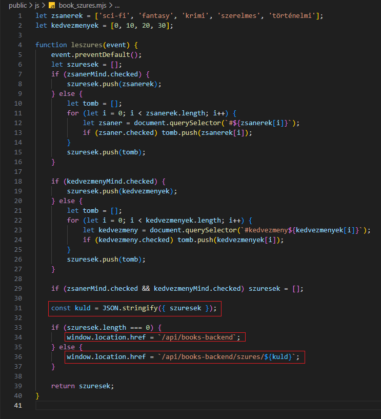

Szűrés beállítása - book_szures.mjs
Szűrés beállítása - book_szures.mjs
Ebben a részben szerkesztjük az public/js mappában a könyvek szűréséhez szükséges mjs állományokat.
-
Szerkesszük az
book_checks.mjsállományt. -
Szerkesszük a
book_szures.mjsállományt.-
async function leszures(event) {...}- az új könyv létrehozásáért felelősaszinkronfüggvény. -
event.preventDefault();- az adatok elküldése után ne frissüljön az oldal. -
const kuld = JSON.stringify({ szuresek });- alakítsuk aszuresekJavaScript tömböt JSON objektummá. -
window.location.href = `/api/books-backend`;- ha nincs szűrés, akkor menjünk át az/api/books-backendroute-ra. -
window.location.href = `/api/books-backend/${kuld}`;- ha van szűrés, akkor menjünk át az/api/books-backend/${kuld}route-ra.
-
-
Az eddigi munka letölthető formátumban:
backend_06.rar
Letöltés és kicsomagolás után aGitBashfelületen abackendmappában adjuk ki a következő utasítást:
npm install -
A webszerver futtatásához adjuk ki a következő utasítást a
GitBashfelületen:
node --watch ./src/server.mjs